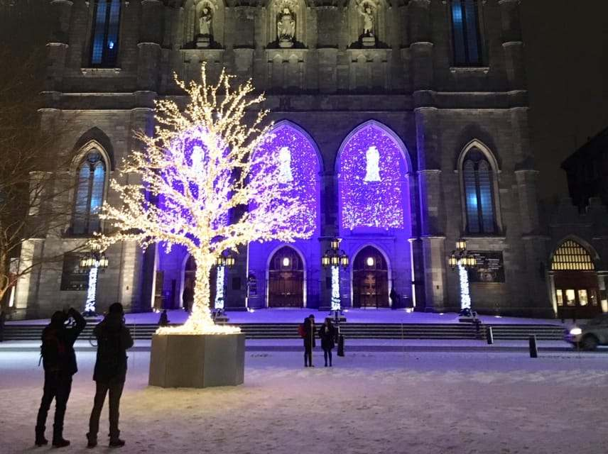
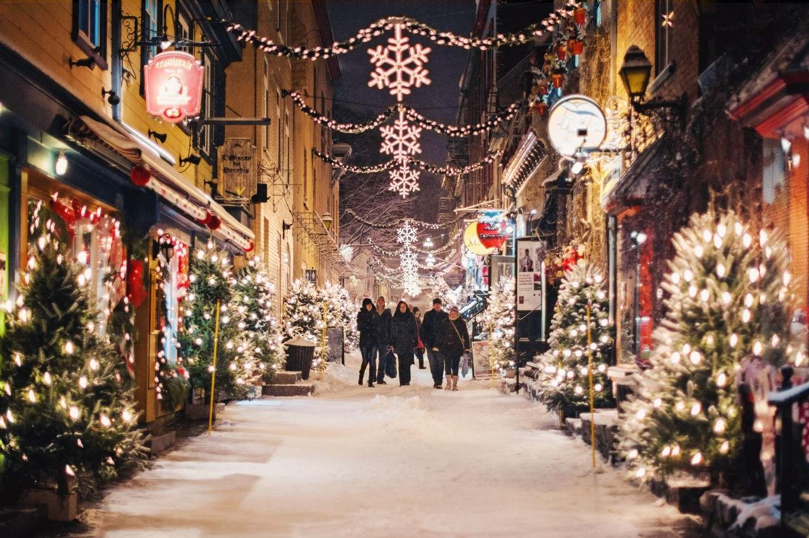
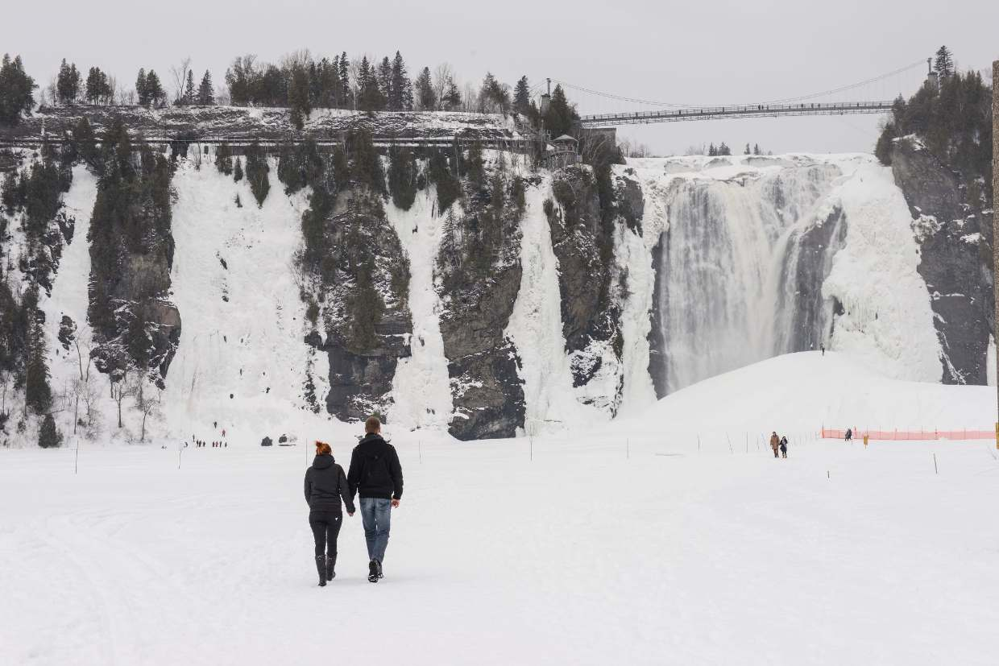

Day 01 · Thu, 24 Dec
Montréal
Historic squares, Old Montréal and a Christmas Eve stroll.
Discover day one ↗
Five days of glowing streets, snowy scenery and holiday memories.
Explore the journey ↗Plan your tripFrom historic streets dressed in holiday lights to a heritage village glowing after dark, discover the highlights day by day.

Historic squares, Old Montréal and a Christmas Eve stroll.
Discover day one ↗
Storybook lanes, festive windows and winter landscapes.
Discover day two ↗A colourful evening at Upper Canada Village before Ottawa.
Discover day four ↗
Travel from the city glow of Montréal to the charm of Old Québec, pause for winter scenery around Montmorency Falls, then follow the festive lights east before a Toronto skyline finale.